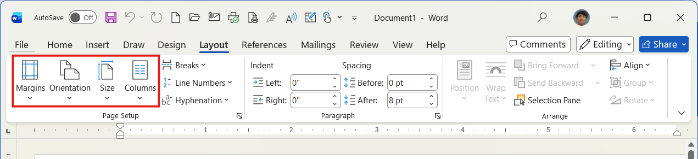
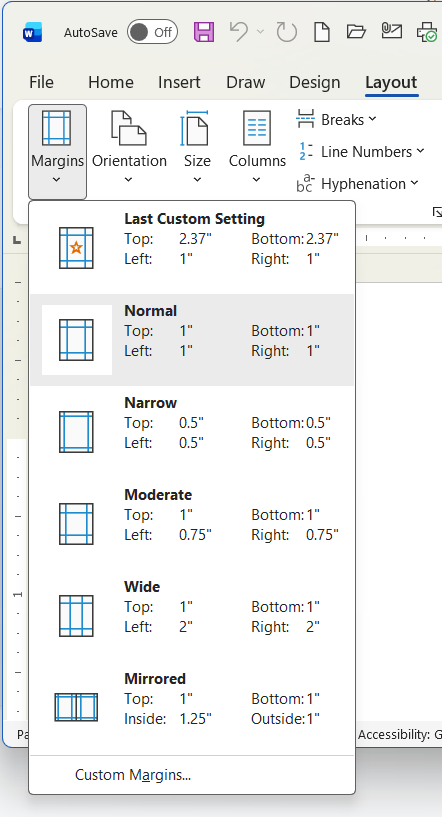
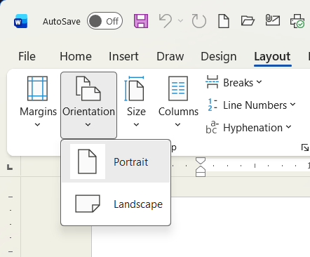
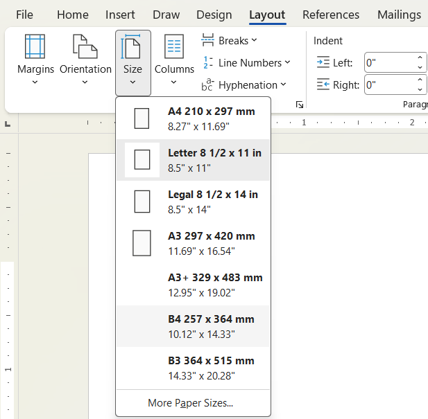
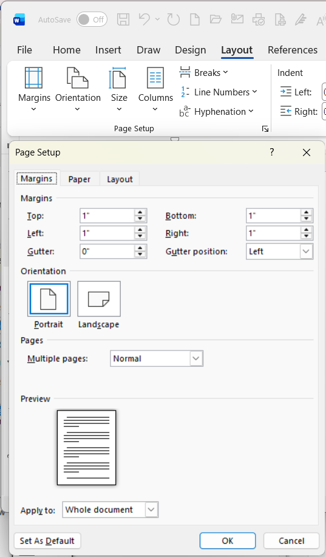

Sebelum Anda mulai mengetik dokumen yang panjang, langkah pertama yang wajib dilakukan adalah mengatur ukuran kertas dan batas tepinya. Jika Anda mengatur kertas di akhir pengetikan, susunan teks, tabel, dan gambar Anda bisa berantakan. Semua pengaturan ini dapat ditemukan di dalam tab Layout.

Gambar 1: Grup perintah Page Setup pada Tab Layout
Margin adalah jarak kosong antara tepi kertas fisik dengan tempat teks mulai diketik. Word menyediakan batas atas (Top), bawah (Bottom), kiri (Left), dan kanan (Right).

Secara bawaan, Word menggunakan arah vertikal. Namun, untuk jenis dokumen tertentu, Anda perlu memutar arah kertas menjadi horizontal.

Ukuran kertas di layar harus sama persis dengan ukuran kertas asli yang dimasukkan ke dalam mesin Printer. Jika berbeda, hasil cetakan bisa terpotong di bagian bawah atau bergeser.

Untuk membuka pengaturan lanjutan, klik ikon panah kecil di sudut kanan bawah grup Page Setup pada tab Layout. Jendela baru akan terbuka dengan kontrol yang sangat detail.